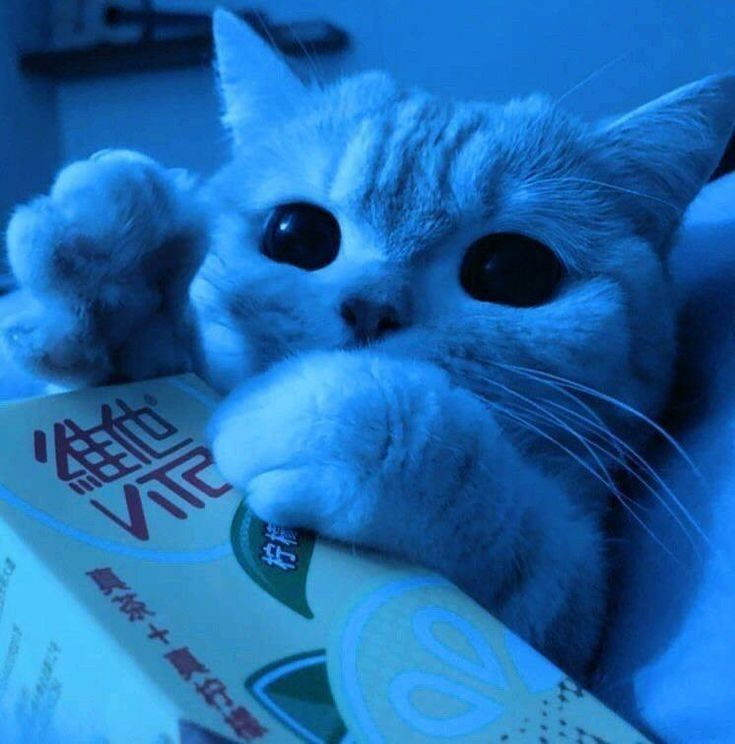
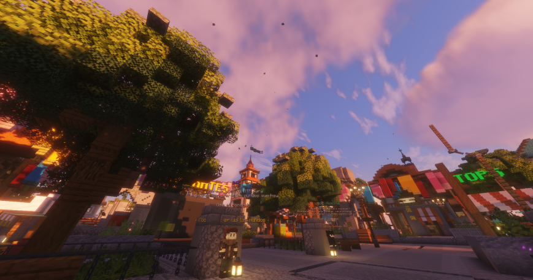
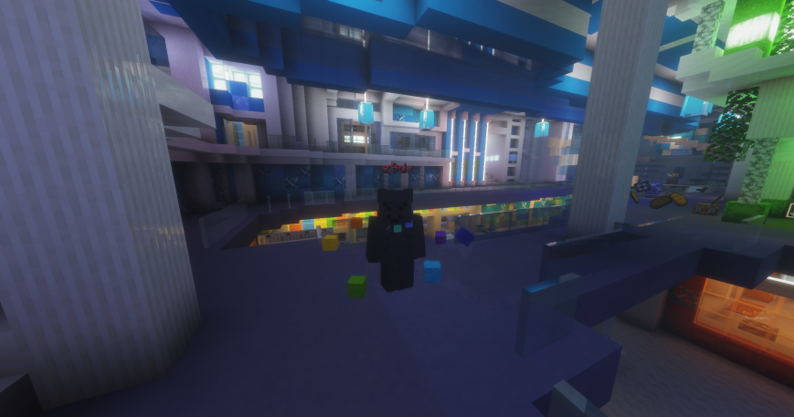

Soy Minty, un desarrollador junior en constante aprendizaje, apasionado por la tecnología y el desarrollo de software. Mi objetivo es mejorar mis habilidades cada día, adquirir nuevos conocimientos y convertir mis metas en logros reales. En este portafolio podrás encontrar algunos de mis proyectos más importantes, donde aplico lo que he aprendido durante mi proceso de formación. Si estás interesado en colaborar o necesitas ayuda en algún proyecto, puedes contactarme al final de la página.

Mi Network de Minecraft, uno de mis proyectos más grandes hasta la fecha y que mas orgulloso estoy de haber fundado.

Un proyecto que forma parte de Lyric, pero el que hizo posible esto fue el fundador y mejor amigo Pumking el que le dio vida a este proyecto tan ambicioso.

Mis Redes